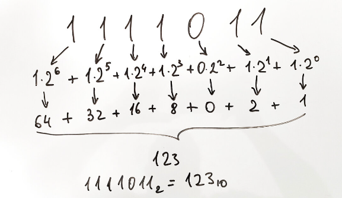

15. Двоичное число в десятичное (в коде есть строки из следующих тем: "строки").
Условие:
Напишите программу, которая будет преобразовывать двоичные значения (по основанию 2) в десятичные (по основанию 10).
Пользователь должен ввести число в двоичном виде как строку, а программа – преобразовать его по-символьно в десятичный вид и вывести на экран с соответствующим сообщением.
Подсказка:

Код:
# проверка ввода
while True:
digit = input("%50s" % "Введите число в двоичной системе счисления: ")
test = "pass"
for i in digit:
if i != "0" and i != "1":
test = "mistake"
if test == "pass":
break
digit_mod = digit[::-1]
diapazon = range(0, len(digit_mod))
amount = 0
for a, b in zip(digit_mod, diapazon):
amount += (int(a) * 2 ** b)
print("%49s" % "Перевод в десятиричную систему счисления:", amount)